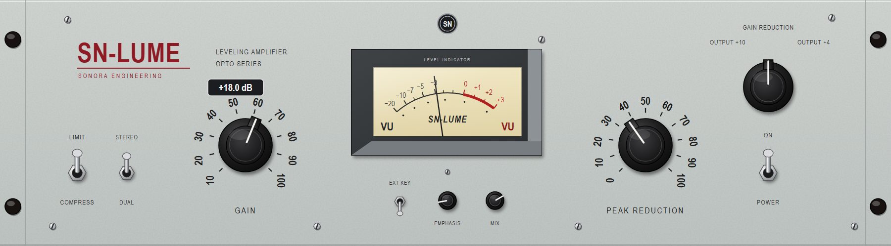
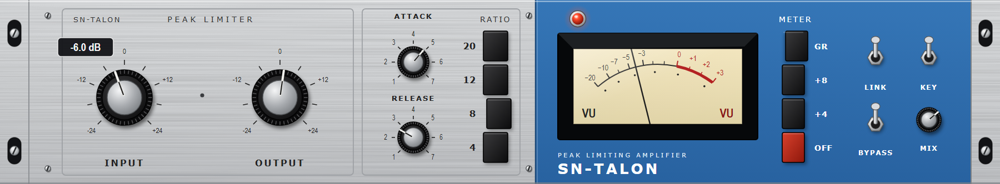
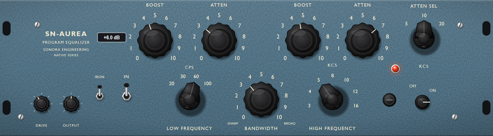

Faithful redraws of the unit types that inspired each plugin, for owner approval. Images only: no editor code until approved. Our names only; nothing traced.
1960s tube optical leveling amplifier: flat pale grey-green 3U panel, one big pointer knob each side of a centred VU in a dark bevelled bezel, bat toggles at the corners.

| Control | Parameter id | Range / steps | Notes |
|---|---|---|---|
| GAIN knob (left of the meter, printed 10 to 100) | gain | -12 to +40 dB, linear | Printed 10..100 over 270 degrees; the control maps linearly onto the parameter range. Tooltip %+.1f dB. |
| PEAK REDUCTION knob (right of the meter, printed 0 to 100) | peak_reduction | 0 to 100 %, linear | |
| LIMIT / COMPRESS bat toggle (bottom left) | mode | compress (down), limit (up) | |
| STEREO / DUAL bat toggle (beside it, where the original has its trim nut) | link | off / on | Our addition, drawn in the original's empty spot. |
| POWER bat toggle (right, under the selector) | bypass | up = processing, down = bypassed | The original's mains switch, reused as bypass. |
| EXT KEY mini toggle (under the meter) | external_sc | off / on | Our addition; hidden when the chain has no side-chain input. |
| EMPHASIS mini knob (under the meter) | emphasis | 0 to 100 % | Our addition, small. |
| MIX mini knob (under the meter) | mix | 0 to 100 % | Our addition, small. |
| Meter selector (top right: GAIN REDUCTION / OUTPUT +10 / OUTPUT +4) | none | view state | Chooses what the needle shows; not a parameter. |
| VU meter | none | live gain reduction / output | Needle ballistics live in the painter. |
1970s FET peak limiter, blue-stripe edition: brushed aluminium on the left, a painted blue section on the right with the meter in a deep recess, knurled knobs, black push-button columns.

| Control | Parameter id | Range / steps | Notes |
|---|---|---|---|
| INPUT knob (left, large, ticks every 6 dB, numerals -24 to +24) | input | -24 to +24 dB, linear | Tooltip %+.1f dB. |
| OUTPUT knob (right of INPUT, large) | output | -24 to +24 dB, linear | |
| ATTACK knob (small, upper, printed 1 to 7) | attack | log, kAttackMinMs to kAttackMaxMs | 1 = slow (max ms), 7 = fast (min ms): the control inverts the parameter, as on the original. |
| RELEASE knob (small, lower, printed 1 to 7) | release | log, 59.4 to 1159.4 ms | 7 = fast, inverted likewise. |
| RATIO push buttons (one column, 20 / 12 / 8 / 4 top to bottom) | ratio | steps 0 to 3: 4:1, 8:1, 12:1, 20:1 | Radio group; the pressed one sits recessed. |
| All four ratio buttons in | ratio | step 4: all buttons | Shift-click on any ratio button; all four then show pressed. |
| METER push buttons (GR, +8, +4, OFF; OFF is red) | none | view state | Not a parameter. |
| LINK mini toggle (blue, right end) | link | off / on | Our addition on the blank blue. |
| KEY mini toggle (blue, right end) | external_sc | off / on | Host-routed; hidden when there is no side-chain input. |
| BYPASS mini toggle (blue, right end) | bypass | up = processing | Pilot lamp (top left of the blue) is lit while processing. |
| MIX mini knob (blue, right end) | mix | 0 to 100 % | Our addition. |
| VU meter | none | live gain reduction |
1950s/60s passive tube program equalizer: blue-grey hammer-finish 3U panel, four fluted bakelite knobs in the top row, rotary frequency selectors with paddle handles below, a toggle and a pilot lamp, no meter.

| Control | Parameter id | Range / steps | Notes |
|---|---|---|---|
| LOW BOOST knob (top row, first; printed 0 to 10) | lf_boost | 0 to 14 dB | Tooltip %+.1f dB. |
| LOW ATTEN knob (top row, second) | lf_atten | 0 to 16 dB | |
| HIGH BOOST knob (top row, third) | hf_boost | 0 to 16 dB | |
| HIGH ATTEN knob (top row, fourth) | hf_atten | 0 to 20 dB | |
| LOW FREQUENCY selector, CPS (bottom, left of centre) | lf_freq | 4 steps: 20, 30, 60, 100 Hz | Snaps; the paddle points at the printed value. |
| BANDWIDTH knob (bottom centre, 0 to 10, SHARP to BROAD) | hf_q | 0.3 to 3.0, log | SHARP (left) = high Q, BROAD (right) = low Q: the control inverts the parameter. |
| HIGH FREQUENCY selector, KCS (bottom, right of centre) | hf_freq | 7 steps: 3, 4, 5, 8, 10, 12, 16 kHz | |
| ATTEN SEL selector, KCS (top right) | hf_atten_freq | 3 steps: 5, 10, 20 kHz | |
| IN toggle (bottom, left of the selectors) | bypass | up = IN (processing) | As on the original: toggle to switch the EQ in. |
| IRON mini toggle (bottom left) | iron | off / on | Our addition, in the blank strip under the nameplate. |
| DRIVE mini knob (bottom left) | drive | 0 to 24 dB (default 6) | Our addition; tube make-up stage drive. |
| OUTPUT mini knob (bottom left) | output | -12 to +12 dB | Our addition. |
| Pilot lamp (right, red jewel) | none | indicator | Lit while processing. |
| OFF / ON mains knob and fuse holder (right) | none | decoration | Drawn as on the original; not mapped (the host owns power). |